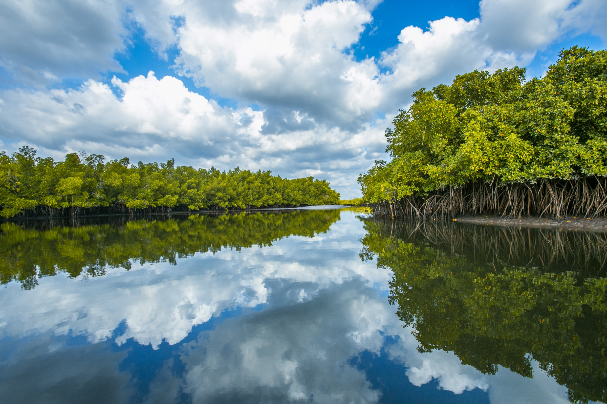
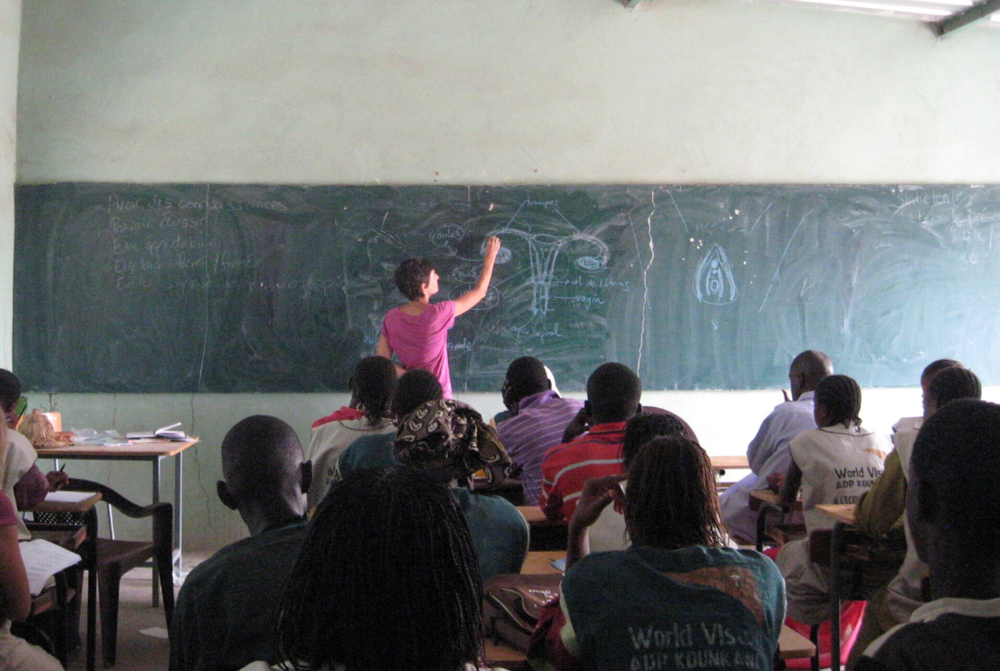
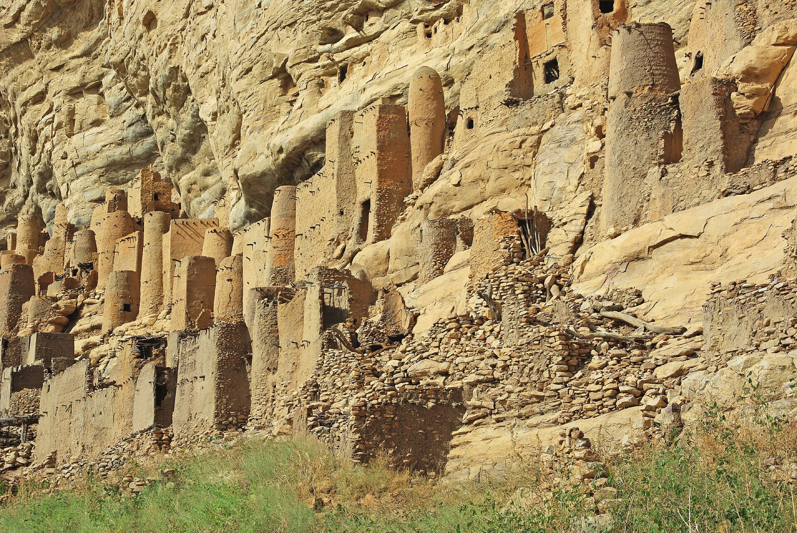
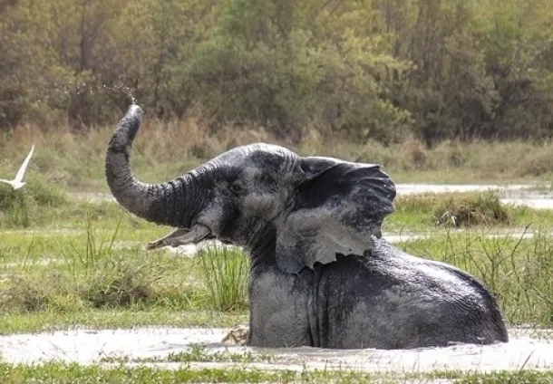
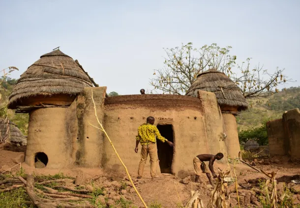
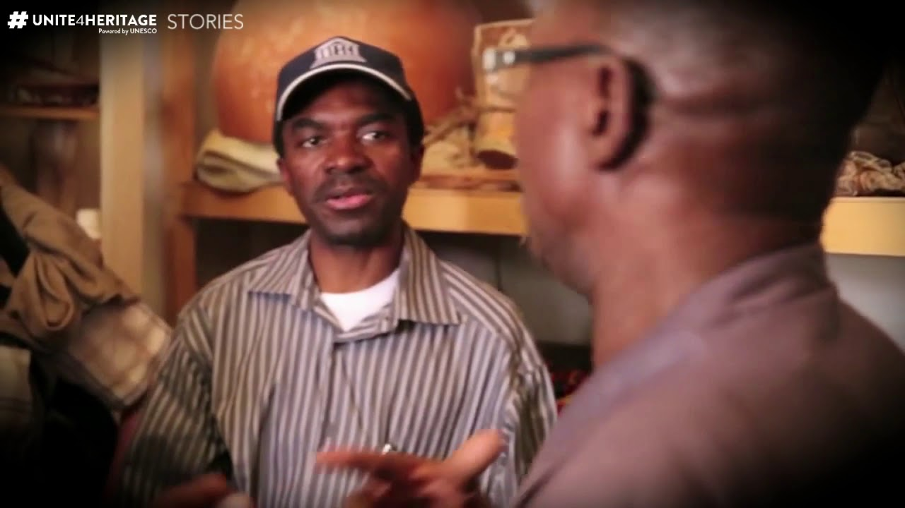
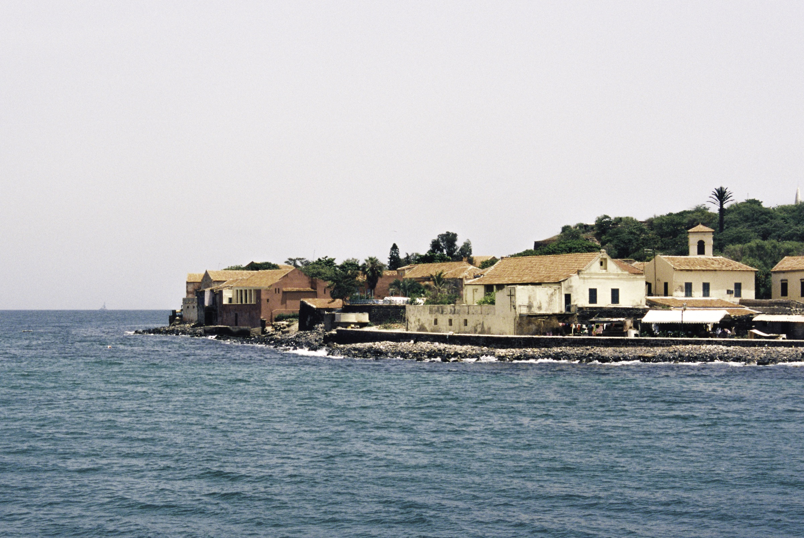
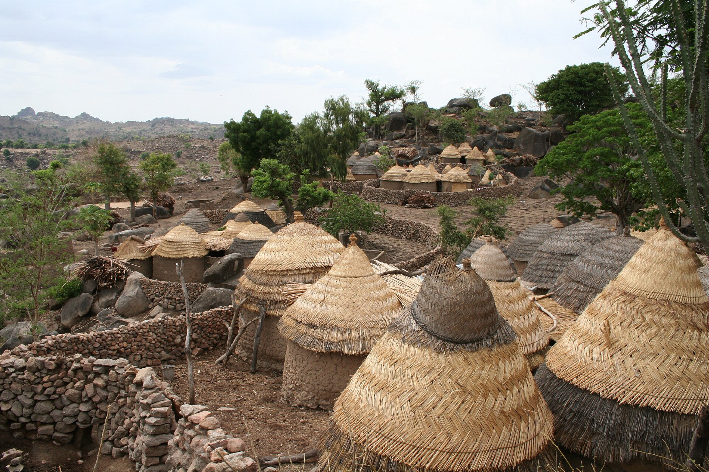

Education
From early childhood to technical and vocational training, helping countries build education systems that are equitable, resilient and ready for the future.
Education programmesUNESCO Dakar is the Multisectoral Regional Office for West Africa, working with fifteen countries across every field of UNESCO's mandate.

Senegal · © UNESCO / LayeproSaloum Delta, a living biosphere
 Mali
MaliThe Great Mosque of Djenné

SenegalAnalyzing education in Senegal
 Ghana
GhanaLiving heritage, woven by hand

MaliCliff of Bandiagara, Land of the Dogons
 Togo
TogoKoutammakou, Land of the Batammariba
Programmes in education, sciences, culture, social and human sciences, communication and information, delivered with governments and partners in fifteen countries.
From early childhood to technical and vocational training, helping countries build education systems that are equitable, resilient and ready for the future.
Education programmes
World Heritage, living heritage and creative cities across the region, safeguarded with the communities who carry them.
Biosphere reserves, water and ocean science, with research that informs policy.
Youth, inclusion, gender equality and the ethics of new technologies.
Free, independent media and access to information for everyone.
UNESCO Dakar liaises with the United Nations Development Coordination Office and covers fifteen West African countries beyond the Sahel region.
Biosphere reserves in the Region
World Heritage Sites in 12 West African countries
Elements of Intangible Cultural Heritage since 2008
The places, practices, languages and archives that UNESCO helps protect across West Africa.
Sites of outstanding universal value in the Region, from Gorée Island to the Old Towns of Djenné.
Discover the sites
Elements and safeguarding practices in Africa, kept alive by the communities that practise them.
Discover
Languages registered by African States are being monitored.
Learn more
Landscapes where conservation and sustainable livelihoods go together.
Discover
Cities that place creativity at the heart of their development.
Discover the cities
Heritage documentaries in the Region listed on the Memory of the World Register.
DiscoverThe latest from the field, the office and our partners.





Voices and projects from across the Region on UNESCO's video channel.
Placing equity at the heart of policy. Read the continental report and browse the full catalogue of publications from UNESCO Dakar.